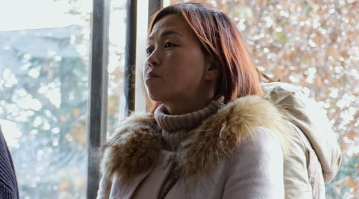

做为北京人，现在被外地人防着我没有任何不舒服的感觉，我认为非常正常，也很合理。北京人现在绝大多数没事也老老实实在北京呆着不会到处给别人添乱。大家没那么玻璃心~~多大点事儿啊。---:抱歉，作者已设置仅展示半年内微博，此微博已不可见。
最让我感到震惊的，是冒名顶替居然不用负任何刑事民事责任。这不至少应该是诈骗和伪造证件罪吗。当然，我不懂法。懂法的可以说说为什么法律不管@蓝鲸财经记者工作平台:【鲸视频：17年前#被顶替上学的王娜娜现状#，毕业或因年龄大仍难圆教师梦】6月18日，河南郑州。记者从17年前被冒名顶替上大学的王娜娜处获悉，37岁的她即将从洛阳理工学院毕业，希望做老师。她向顶替者索赔13元的案子正在等待开庭。@澎湃新闻 澎湃新闻的微博视频  510万次播放 04:31